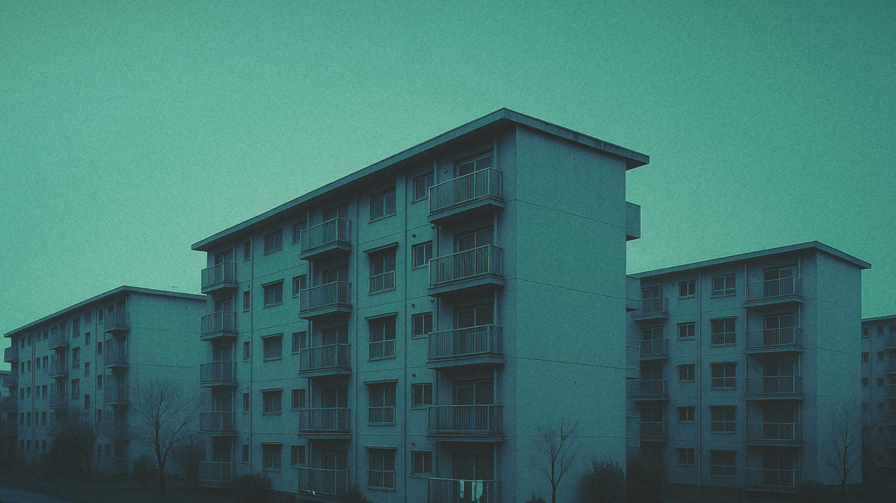
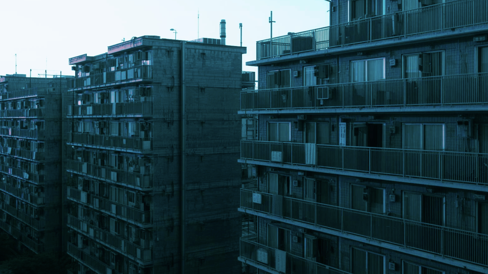

一定期間の移住を経て、問題行動が確認されなかった個体が移送される団地です。Bタイプよりも安全性・防音性ともに優れています。

他の住民の安全確保のため、Bタイプに移送できない個体を収容する施設です。配給場所からは離れていますが、食事は各部屋の玄関先に設置された配給ボックスへ届けられます。
移住確定後、最初に移送される団地です。安全性はAタイプに比べてやや劣りますが、安心して暮らして頂けます。 Aタイプと同じ種類の建物です。